Estreou na televisão americana pela emissora The CW em 10 de setembro de 2009 e ficou no ar até 10 de
março de 2017
A cidade fictícia de Mystic Falls, na Virgina, é assombrada por criaturas sobrenaturais. Damon (Ian
Somerhalder) e Stefan Salvatore (Paul Wesley)
são irmãos que ganharam a condição de vampiro e desde então procuram manter sua imortalidade em segredo.
Ao mesmo tempo, buscam resistir à vontade de atacar seres humanos. Ambos conhecem Elena Gilbert (Nina
Dobrev), uma linda e popular estudante, e logo se atraem por ela. No entanto, a jovem corresponde apenas
um dos interessados, e estes iniciam uma disputa por sua alma.
Apresentação de alguns personagens principais:
Elena Gilbert:
É a personagem principal feminina de The Vampire Diaries. Elena é uma garota de 18 anos que
sofreu um acidente e uma médica usou sangue do vampiro Damon Salvatore para cura-lá, então quando
Elena cai da ponte com seu melhor amigo Matt e ambos conseguem sair do carro, Elena morre e se torna uma
vampira.
Bonnie Bennet:
Bonnie Sheila Bennett é uma bruxa muito poderosa e uma das principais personagens femininas da The
Vampire Diaries. Antes de sua destruição, ela era a Âncora para o Outro Lado e, até recentemente,
uma caçadora sobrenatural. Enquanto ela preenchia o papel de conselheira e confidente para todos os
seus amigos, Bonnie é uma feiticeira, contudo empática, que descobriu seus poderes apenas a tempo de
ajudar sua família e amigos. No início, antes que Bonnie descobrisse sua verdadeira herança como
bruxa, Bonnie se descreveu como uma psíquica.
Ela é a melhor amiga de Caroline Forbes , Elena Gilbert , Matt Donovan , Damon Salvatore e o ex-namorado
Jeremy Gilbert.
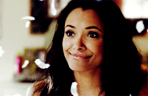
Caroline Forbes:
Caroline Forbes (pronúncia Queroláine) foi a filha de Bill Forbes e de Elizabeth Forbes. Ela
foi morta por Katherine Pierce em Janeiro de 2010, enquanto ela teve o sangue de Damon Salvatore em seu
organismo, fazendo dela uma vampira. Ela era a melhor amiga de Elena Gilbert e de Bonnie Bennett.
“Prometam-me algo, vocês dois. Escreva tudo, tudo o que você conquista em suas vidas, cada paixão,
quando você se apaixona, quando você começa uma família, cada vez que você fantasia sobre querer
matar Damon. Escreva para que um dia, quando eu acordar, eu possa ler tudo sobre a vida dos meus
melhores amigos e sentir como se estivesse lá.”
- Elena para Caroline e Bonnieem Estou pensando em você o tempo todo.
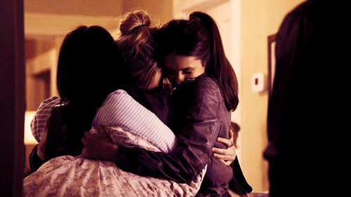
Stefan Salvatore:
Stefan Salvatore (Stephano Salvatore) foi o ex-namorado da protagonista Elena Gilbert (eles
romperam o namoro definitivamente no episódio de número 7 da 4ª temporada ) e é um vampiro
conflitante. Seu irmão Damon Salvatore, que também é um vampiro, o odeia e ele lhe prometeu uma vida de
miséria. Ele é o principal antagonista masculino. Na verdade, existe. Stefan é um membro da Família Salvatore.
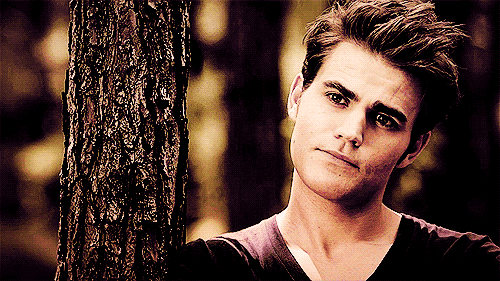
Damon Salvatore:
Damon Salvatore é um dos dois principais protagonistas masculinos da The Vampire Diaries . Damon era
um vampiro de 179 anos e descendente distante de Silas. Mas agora ele é humano, já que seu irmão
mais novo, Stefan Salvatore , o injetou com a cura. Ele foi um grande antagonista na primeira parte da
primeira temporada. Ele nasceu durante o ano de 1839 e morou na cidade colonial de Mystic Falls com
seu irmão Stefan, seu pai,Giuseppe Salvatore , e também com sua mãe Lillian Salvatore até sua morte em
1858. Ele se tornou um vampiro em 1864. Na época de seu retorno a Mystic Falls , Damon e Stefan não
se viram em quinze anos devido ao seu relacionamento amargo e violento.
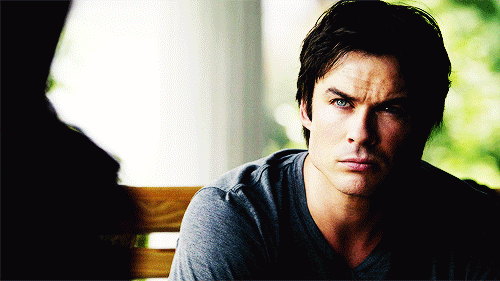
Katherine Pierce:
Katherine Pierce(Nascida Katerina Petrova e em Bulgariano: Катерина Петрова) é uma das
principais protagonistas femininas de The Vampire Diaries. Katherine é uma Vampira de 567 anos e
descendente direta e Duplicata de Amara. Era uma Bruxa da subcultura viajante, mas foi trazida de
volta a vida e re-transformada em vampira pelo ritual de Bonnie e Freya.
Outros personagens principais no fandom:
Jeremy Gilbert
Alaric Saltzman
Lexi Branson
Lorenzo St. John (Enzo)
Niklaus 'Klaus' Mikaelson
Elijah Mikaelson
Jeremy Gilbert:
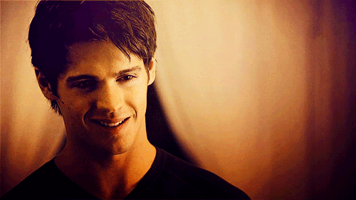
Alaric Saltzman:
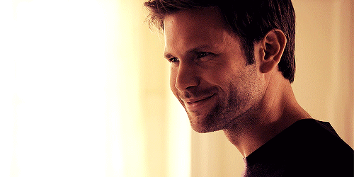
Lexi Branson:
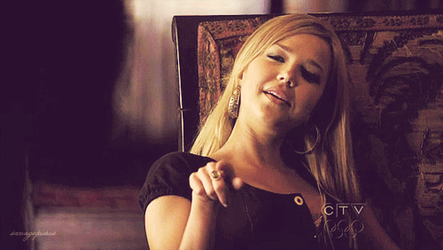
Lorenzo St. John (Enzo):
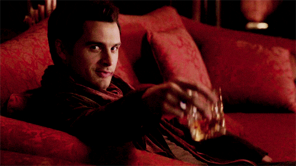
Niklaus 'Klaus' Mikaelson:
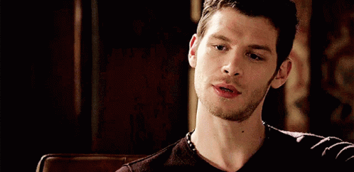
Elijah Mikaelson:
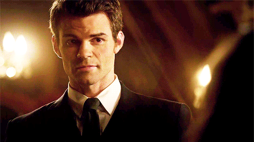
Séries que da continuidade a TVD:
Os Orinais (Os Originals)
5 Temporadas
2013
Legados (Legacies)
4 Temporadas
2018
The Originals
Legacies
Sinopse de Os Originais:
O clã Mickelson tem sofrido perdas e mais perdas com o passar dos séculos, seus desafetos se multiplicam
a cada nova lua, suas contendas familiares também não deixam nada a desejar, com o passar dos milênios o clã
viajou por vários continentes, deixando novos vampiros por onde passavam, mas os Originais se sentem
em casa mesmo quando estão nas ruas da histórica, e apaixonante, Nova Orleans.
Sabe-se que com o passar dos séculos, os Mickelsons deixaram inimigos por onde passaram, a cada nova cidade
onde faziam novas vitimas histórias eram contadas sobre um mal que assolava o local… O membro mais conhecido
dá família é o vampiro Klaus, um Original que não tem respeito algum pelos outros, que usa seu poder
para subjugar todos aqueles que acha conveniente.
Elijah, o irmão mais velho, acaba por ser o que intercede pelo irmão fanfarrão, e que está,
constantemente, lutando para que a família permaneça unida. Rebekah vive sob a sombra dos irmãos e
tenta permanecer por perto, quando no fundo tudo que ela almeja é ir para longe da bagunça e da desordem,
frequentemente causada pela existência de Klaus.
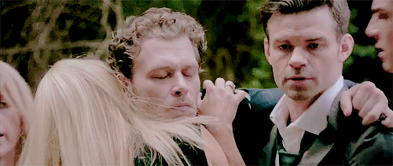
Não obstante a atmosfera de caos causada por bruxas e vampiros vivendo na mesma cidade, existem
ainda os Lobisomens que moram nos arredores da cidade, porque foram expulsos de lá pelos Originais.
Em dado momento Klaus conhece Hayley, uma descendente do clã dos lobisomens que vive nos
arredores de Nova Orleans. Sem saber de maiores detalhes, os dois são acometidos por uma química que
acaba resultando em Hayley grávida, e aí nenhum segredo podia ser mantido entre eles.
Passando por todo tipo de situação, Klaus e Hayley resolvem ter a criança, mesmo sabendo que naquele
momento um já não suporta mais o outro. Dentre as idas e vindas da trama, o clã dos Mickelson acaba
sendo subjugado por uma aliança entre Marcel (vampiro criado pro Klaus, mas que após feitiços
agora é um híbrido) e as bruxas.
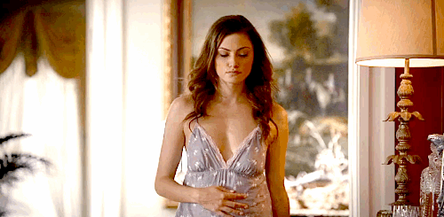
E assim, dando continuação a familia mais poderosa da saga, tiveram Hope Mikaelson. Que é tríbida
(Vampira, Bruxa e Lobisomem)
se tornando a mais poderosa de todos os tempos. E da continuidade a saga em Legacies
(Legados). Junto com as Gemêas Saltzman.